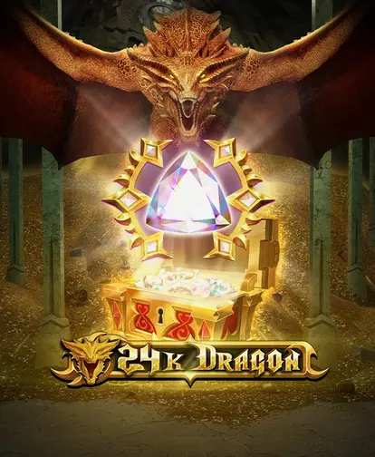
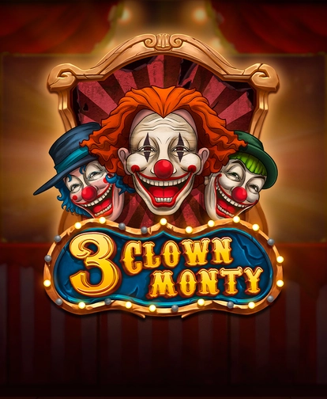
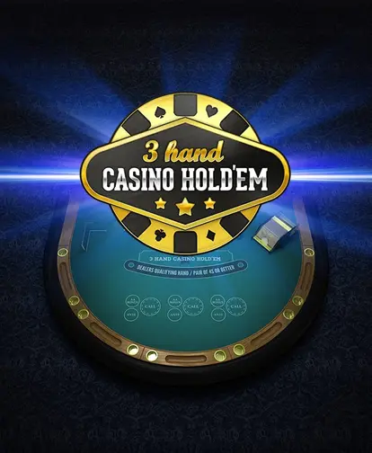
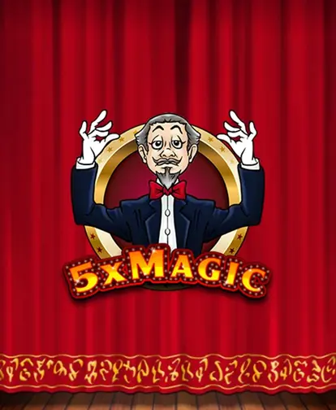
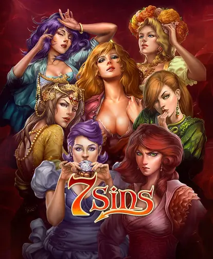

24K Dragon
An opulent vault heist where every torch-lit chamber rewards curiosity and steady pacing.
These are the six experiences currently showcased. Each link loads instantly with complimentary credits, so feel free to explore them all.

An opulent vault heist where every torch-lit chamber rewards curiosity and steady pacing.

A mischievous troupe of acrobats invites you to line up tricks, stack multipliers, and laugh at their patter.
A sequel with synchronized stage cues, cinematic transitions, and layered boosters for patient planners.

A tactical card lounge with three simultaneous hands, calm narration, and coaching overlays.

A compact illusionist act where stacked hocus symbols bend the grid into rhythmic cycles.

A moody character study with mirrored icons, narrative prompts, and branching bonus chapters.
Rotate through the six selections in sequence to feel the contrast between mechanics. We recommend setting a gentle timer, jotting notes about accessibility presets that work for you, and revisiting the experiences every few weeks as we refresh copy.
Remember that everything here is complimentary and carries no financial value. Use the instant-play buttons to open secure iframes directly from the publisher, and rely on the detail pages if you need lore context or accessibility breakdowns.